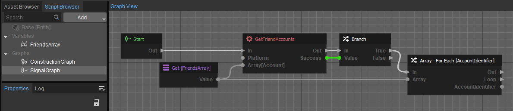
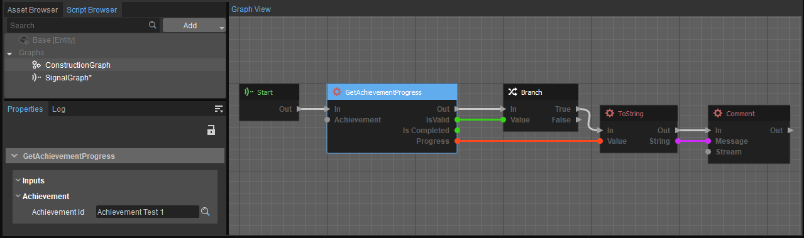
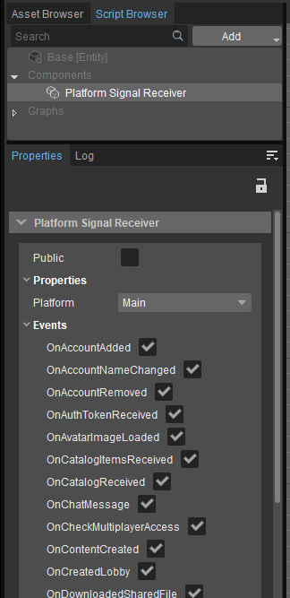
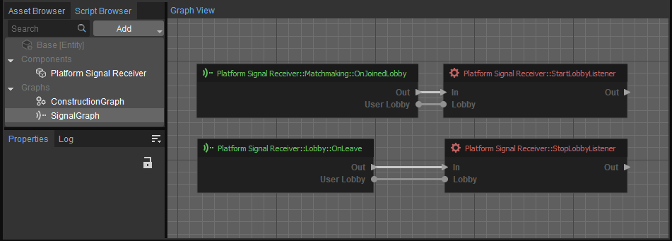

Overview
The Schematyc (Experimental) implementation of the GamePlatform plugin has three main aspects:
- Data types, which are passed to other nodes/functions and stored in variables.
- Functions, which work on data types and execute platform service functionality.
- Events, which are listened for via the Platform Signal Receiver component.
The following page goes into detail regarding the data types and platform events.
- Schematyc (Experimental) nodes can only be used while a level is active, as the Schematyc (Experimental) system is based on entity components and entity graphs.
- A certain consistency of usage is maintained with Schematic (Experimental) data types in the GamePlatform system. However, due to the Schematyc system being partially complete, specific use cases are custom in the way you interact with the GamePlatform system (such as when handling arrays of different data types).
GamePlatform Data Types
Common Functionality
The data types listed listed in the GamePlatform category share common functions between them, such as IsEqual, NotEqual, and string conversion functions. This allows you to easily output a string representation of the data type (which is usually a unique identifier associated with the data type).
This is useful, for instance, when interacting with the Flash UI system which natively cannot take an AccountIdentifier data type as input.. With the string conversion functions, when a user clicks on another user name in the UI, Flash can return the AccountIdentifier associated with the clicked user.
Make sure that any ToString function used on a data type from a specific platform is matched with a FromString on the same data type for the same platform.
Mixing data type values can sometimes provide an error if you are lucky; however, mixing platforms themselves (e.g., Steam and Discord AccountIdentifiers) will not show any error except when attempting to access a non-existent account on a platform.
Array Types
Functionality of arrays in Schematyc is limited.
To use arrays of certain items, you will need to create a variable (of the element type you want to create an array for) in your Script Entity . You can then use this variable with various nodes that deal with arrays as outputs.
Usage example:

Retrieving a list of the local user's friends
Achievements and Statistics Functions
The Achievements and Statistics functions take as input a pre-defined data type of an achievement or statistic; these functions are automatically generated via the system by parsing the Achievements configuration file.
Usage example:

Retrieving the current progress value of the achievement using the GetAchievementProgress node
Platform Signal Receiver Component and Events
The Platform Signal Receiver component grants access to several signal nodes that you can then use to handle platform events.
You can have multiple Platform Signal Receiver components on a single Schematyc entity, and you can also choose which events (and from which platform) are received by the component.
This means you can name your components accordingly if you wish, for example, to listen to multiple platforms on a single Schematyc Entity.

Platform Listener component options
Type Instance Events
Some data types in the Platform Services have their own events.
For example, each lobby can trigger events when players enter or leave; special Add and Remove listener functions are made available from the Platform Signal Receiver component for these data types.
Usage Example

Listening for any lobby that a local user might join or leave